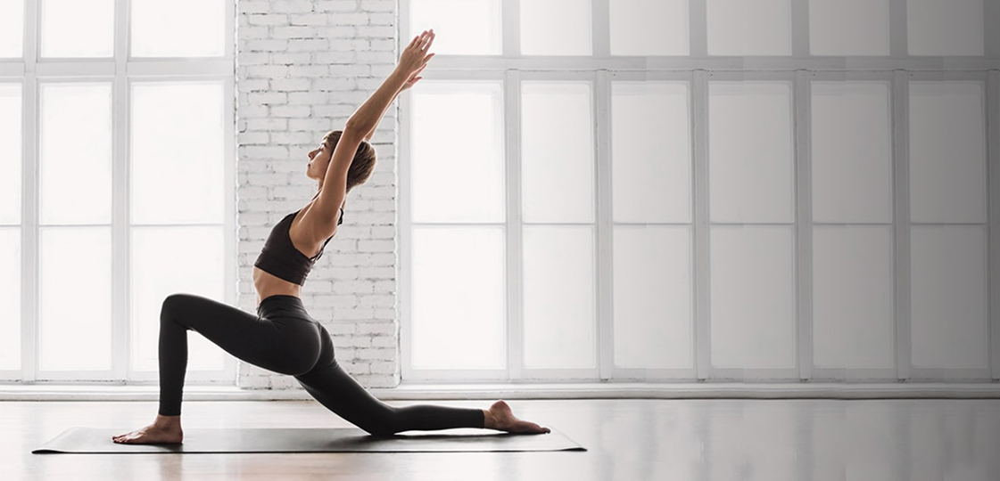

Кардиотренировки — это лучший способ подарить телу легкость, а сердцу — здоровье. Они не только помогают поддерживать идеальный вес, сжигая лишние калории, но и наполняют энергией, запуская выработку гормонов счастья. Регулярные пробежки или плавание делают нас выносливее, превращая обычную жизнь в череду достижений без одышки.

Тренировки для группы здоровья — это не про рекорды и усталость, а про бережную заботу о себе. Плавные движения, суставная гимнастика и ходьба помогают сохранить гибкость суставов и бодрость духа в любом возрасте. Такие занятия мягко пробуждают тело, улучшают осанку и дарят ощущение внутренней свободы без риска травм.

Кроссфит — это гораздо больше, чем просто тренировка. Это взрывная смесь силовых упражнений, гимнастики и кардио, которая заставляет тело работать на пределе возможностей. Здесь нет места скуке: каждый день — новый комплекс (WOD), где ты соревнуешься сам с собой и становись сильнее, быстрее и выносливее. Это путь к функциональной мощности,которая пригодится не только в зале, но и в жизни.

Силовые тренировки — это фундамент красивого и здорового тела. Работа с отягощениями (штангами, гантелями или тренажерами) позволяет не только сформировать рельефную мускулатуру, но и укрепить костную ткань, суставы и связки. В отличие от кардио, силовые нагрузки продолжают сжигать калории даже после тренировки — мышцы требуют энергии на восстановление. Это инвестиция в силу, которая с каждым занятием делает вас мощнее и увереннее.

Растяжка — это искусство быть гибким не только телом, но и мыслями. Мягкие упражнения на стретчинг возвращают мышцам эластичность, снимают напряжение и улучшают осанку. В мире, где мы постоянно сидим, растяжка становится глотком свободы для позвоночника и суставов, возвращая телу природную легкость.

Аэробика — это идеальный способ поднять настроение и укрепить здоровье одновременно. Ритмичные упражнения под музыку заставляют сердце работать активнее, насыщая организм кислородом и запуская выработку гормонов радости. Это тренировка, где ты улыбаешься, даже когда устаешь, а групповая атмосфера заряжает энергией и мотивирует не останавливаться.